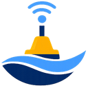

ID OCEAN
- NuajComparaison dans le temps des relevés bathymétriquesnuaj.idocean-utilities.re
- SillageFlotte de navires : positions GPS et maintenancesillage.idocean-utilities.re
- KontrolChecklists de départ, de mission et de retour du matérielkontrol.idocean-utilities.re

BuoLABSupervision des bouées instrumentéesbuolab.idocean-utilities.re- MeteoceanCapture de la carte Windy sur un point choisimeteocean.idocean-utilities.remot de passe
- Planificateur MBESPréparation des levés bathymétriques multifaisceauxsurvey-planner.idocean-utilities.remot de passe
- AplombTraitement bathymétrique des levés réalisés par les USVaplomb.idocean-utilities.re
- SeagradSuivi BIM du terrassement maritime des fondations d'un viaducseagrad.idocean-utilities.re